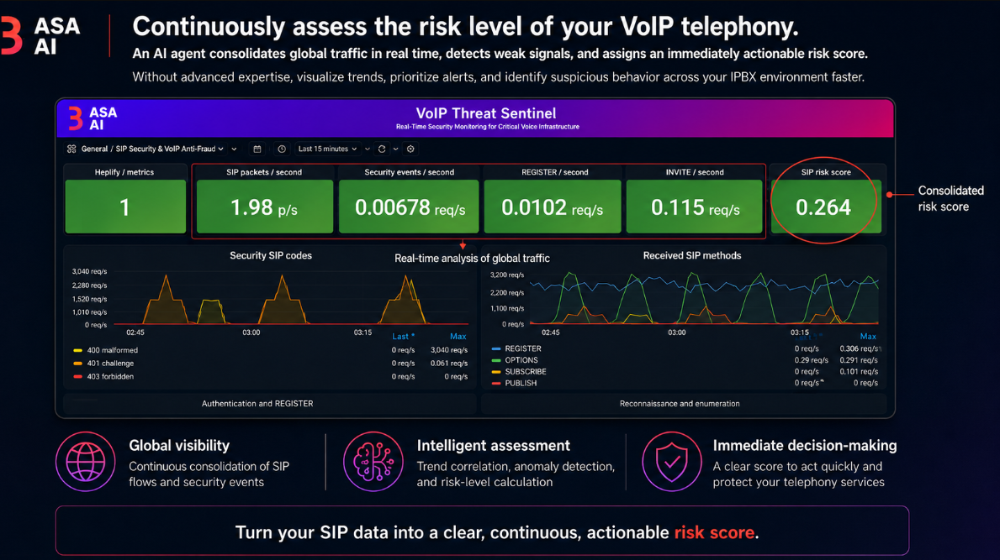
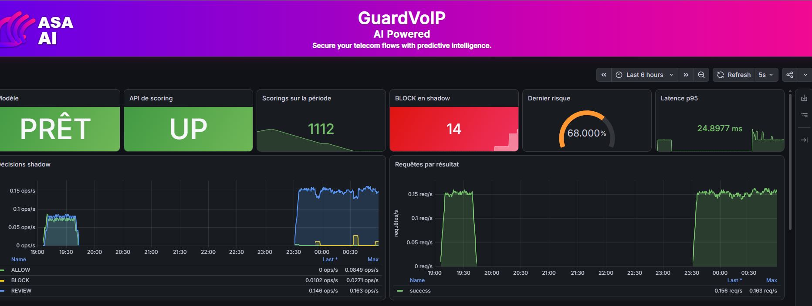
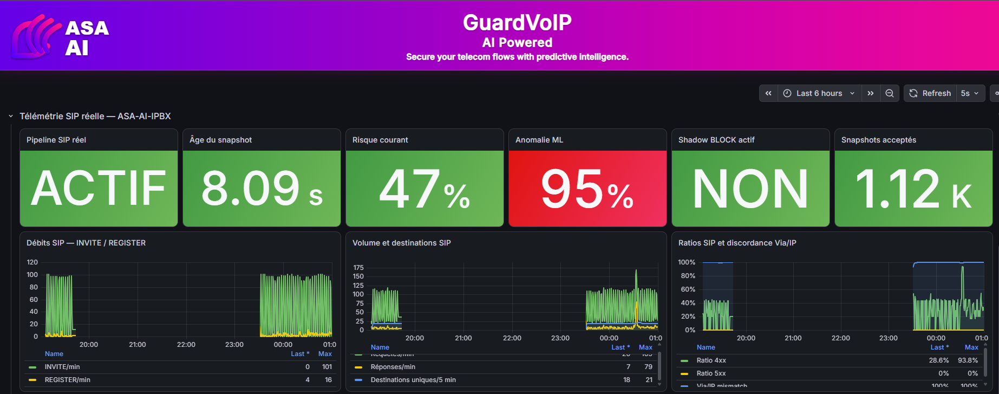
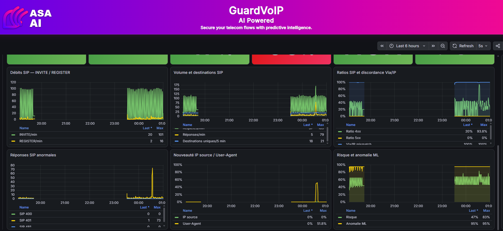
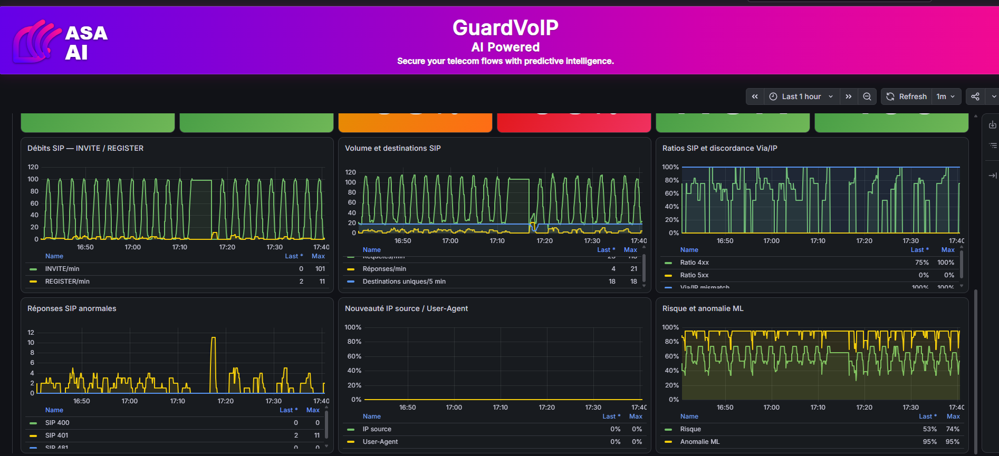
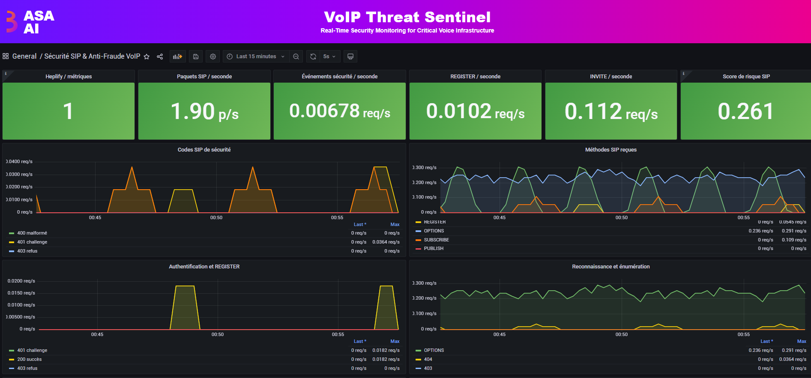
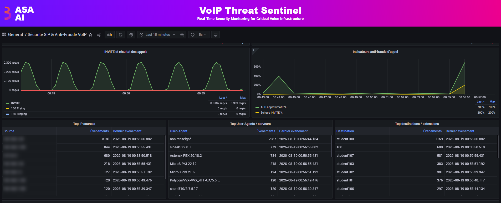
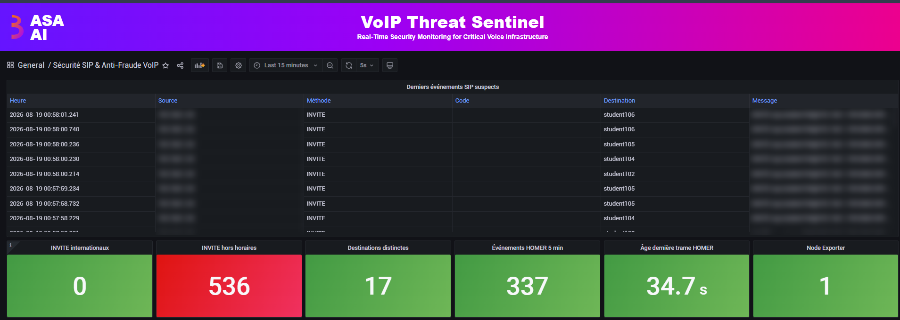

Toll fraud hits at 3 a.m.
Your AI is already awake.
Fraudsters don't knock. They brute-force a SIP extension on a Friday night, pump premium-rate international calls all weekend, and you find out from the carrier bill. Our anti-fraud platform risk-scores your SIP traffic continuously and flags the attack while it is happening, running entirely on your own infrastructure.

The attacks your PBX never tells you about
Classic firewalls see packets. We see intent: who is calling, where, when, how often, and whether it looks like a human or a bot.
Toll fraud & IRSF
Bursts of calls to premium or high-cost international ranges, caught on volume, destination spread and timing.
SIP brute force
Waves of 401 challenges and failed REGISTERs give credential stuffing away before an extension is hijacked.
Scanning & enumeration
OPTIONS floods, sipsak and scanner user-agents, 404 sweeps across extensions, all surfaced in real time.
Off-hours abuse
Calls fired at night or on weekends, when nobody is watching, scored as high risk instantly.
Spoofing & hijacking
Via/IP mismatches, never-seen source IPs and new user-agents raise the anomaly score.
Malformed SIP
400s and abnormal responses that betray fuzzing and exploit attempts against your PBX.
Two engines. One shield for your voice network.
GuardVoIP · AI Powered
A machine-learning engine that scores your live SIP traffic with a risk level and an ALLOW / REVIEW / BLOCK decision in milliseconds. Start in shadow mode: it logs what it would have blocked, so you prove the value on your real traffic with zero risk to legitimate calls, then switch on enforcement.
VoIP Threat Sentinel
24/7 security monitoring of your SIP infrastructure: methods, security codes, authentication, reconnaissance, top talkers, suspicious events and a consolidated SIP risk score, all in one real-time console.
Your call records are personal data.
Keep them home.
Who called whom, when and for how long is regulated data under GDPR and telecom privacy rules. Cloud fraud services ask you to stream it to a third party. We don't.
Typical cloud fraud service
- Your call metadata leaves your network and sits on a vendor's servers.
- Access you don't control: vendor staff, sub-processors and foreign legal requests.
- Black-box verdicts you can't inspect, tune or audit.
- Per-call or per-minute pricing that grows with your traffic.
ASA AI anti-fraud, on-prem
- Zero data egress: SIP telemetry is captured, scored and stored on your own servers.
- Only your team holds the keys. No third-party processor in the loop.
- Explainable scores: every signal behind a risk level is visible on your dashboard.
- Works with your PBX: Asterisk, Kamailio and standard SIP endpoints.
Seven views. Nothing on your SIP trunk goes unseen.
Real screens from our live lab: an Asterisk PBX with IP phones from Yealink, Polycom and Snom, under simulated attack.
Risk scored in ~25 ms. Blocks proven before they are enforced.
Model and scoring API health, scorings over the period, would-be BLOCKs in shadow mode, the latest risk level and p95 latency, plus the ALLOW / REVIEW / BLOCK split over time.

Real PBX traffic in, risk score out. Every few seconds.
Pipeline status, snapshot freshness, current risk, ML anomaly level and accepted snapshots, above INVITE/REGISTER rates, call volume, destinations and SIP error ratios.

The weak signals humans miss.
Abnormal SIP responses, never-seen source IPs and user-agents, Via/IP mismatches, and the risk and ML anomaly curves that tie them together.

A sustained attack, minute by minute.
Rhythmic INVITE bursts, 401 waves and a risk score that never drops: this is what an automated fraud campaign looks like, and it is unmistakable.

Security codes, authentication and reconnaissance at a glance.
SIP packets and security events per second, REGISTER and INVITE rates, the consolidated SIP risk score, 400/401/403 codes, authentication attempts and enumeration activity.

Who is calling, from where, to which extensions.
INVITE outcomes, call-level fraud indicators, and the top sources, user-agents and destinations, so an attacker's tooling and targets stand out immediately.

536 off-hours call attempts. Flagged in red, in real time.
The latest suspicious SIP events line by line, with international and off-hours INVITEs, distinct destinations and capture freshness counters.

Find out what your PBX isn't telling you. Before your carrier does.
See GuardVoIP and VoIP Threat Sentinel catch a live attack in 30 minutes, then decide.
Screens captured on the ASA AI lab under simulated attack traffic. Internal addresses masked.